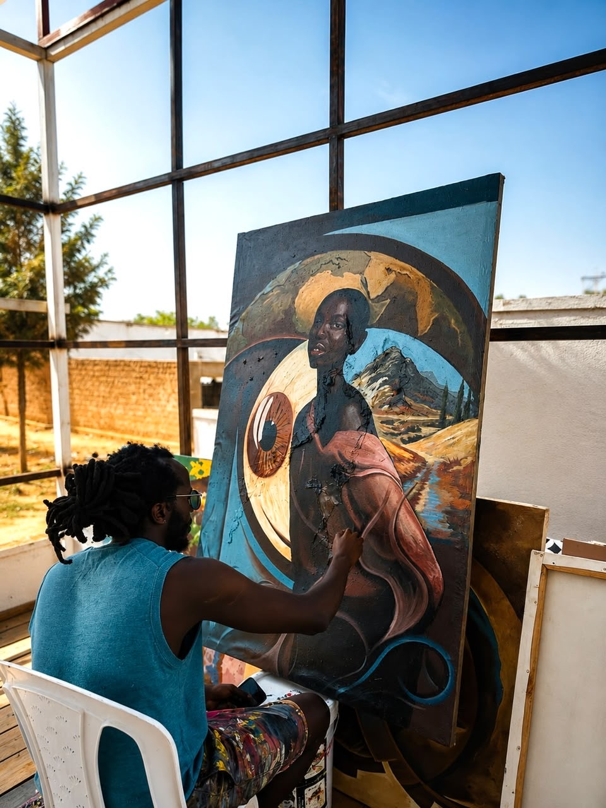
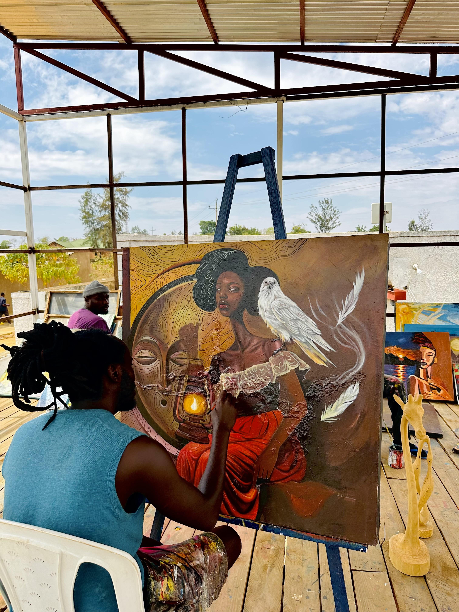
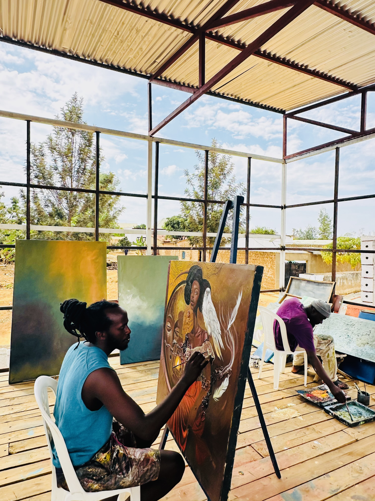
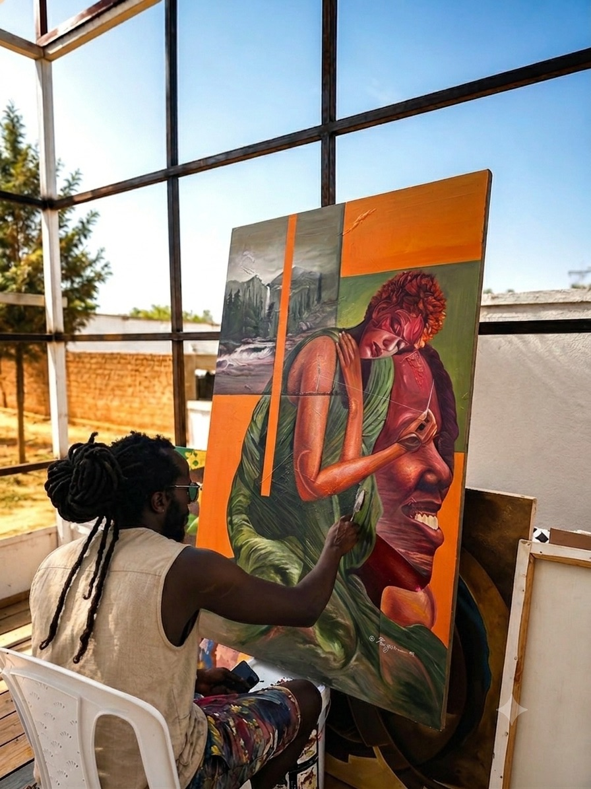
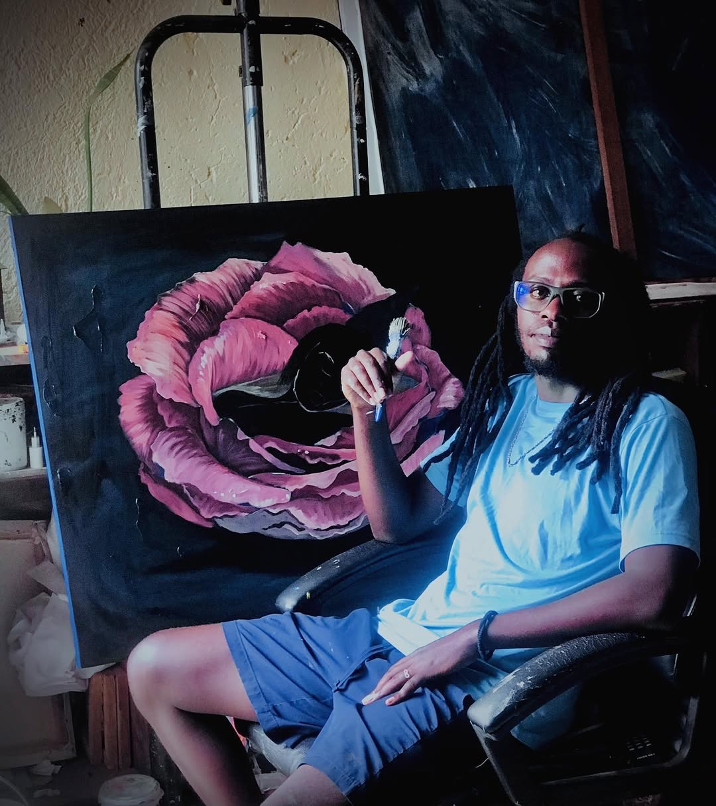

A glimpse into my practice
Inside the
Studio
A closer look at the space, process, and moments behind my work. This is where ideas take shape, paintings develop, and different stories find their way onto the canvas.




